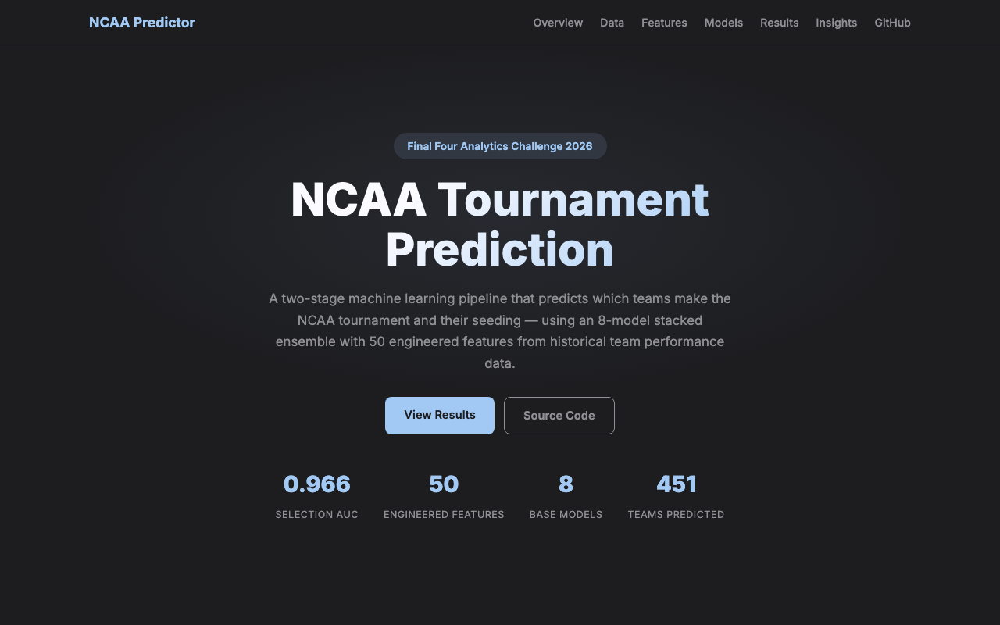
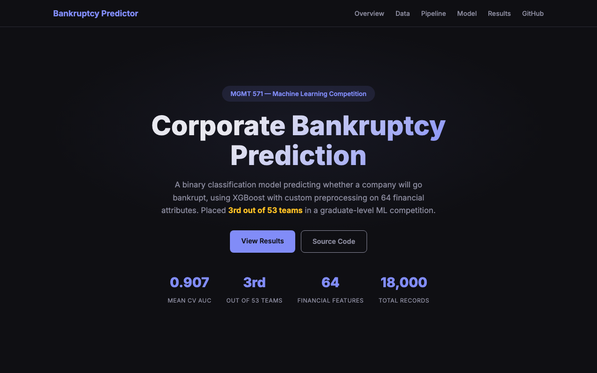

Projects
Each project follows Problem → Approach → Results → Business Insight

BabyShip: DIM-Weight Pricing & Box Standardization
Problem: A baby-gear e-commerce company shipped 17 stroller models in 17 different box sizes. Carriers charge by dimensional weight — (L × W × H) / 250 — whenever it exceeds actual weight. Oversized boxes were inflating DIM charges on nearly every shipment, and the cost was either absorbed as margin loss or passed to customers through higher shipping fees, hurting checkout conversion. At the same time, stocking 17 box SKUs created warehouse picking complexity and storage overhead.
Approach
- Data collection: Gathered dimensions and weights for all 17 strollers and assembled a catalog of 45 commercially available box sizes from carriers and packaging suppliers
- DIM-weight modeling: Computed DIM weight for every stroller-box pair using the standard carrier formula (L×W×H / 250); the billable weight is max(DIM, actual), so any wasted box volume directly becomes added cost
- Fit matrix: Built a binary feasibility matrix — a stroller fits a box only if all three dimensions clear with 0.5″ padding — eliminating impossible assignments before optimization
- Integer optimization (Gurobi): Formulated an ILP that selects ≤7 box types and assigns each stroller to exactly one box, minimizing total billable shipping weight across the product line
- Sensitivity analysis: Compared the 7-box solution against a perfect per-product baseline to quantify exactly where the cost penalty comes from and which products drive it
Results
- Reduced the box catalog from 17 SKUs to 7, a 59% reduction in packaging complexity
- Total billable shipping weight rose by only 6.5% (104.7 lb across 17 products) versus the theoretical minimum
- One workhorse box (S-16765, 36×24×18) covers 5 of 17 products with near-optimal DIM efficiency
- Identified two outlier products (Vista V2, Fox 5) that require a 40×40×40 box — these alone account for 30% of total DIM cost, flagging them for potential packaging redesign or a shipping surcharge
- Solver found the proven-optimal solution in 0.02 seconds with a 0.00% optimality gap
Business Insight
The core tradeoff is non-linear: a 6.5% cost increase buys a 59% reduction in box SKUs. That ratio gives operations a clear, quantified decision point rather than an open-ended debate about simplification. The two outlier products are responsible for an outsized share of DIM cost and should be evaluated separately — whether through redesigned packaging, a flat shipping surcharge, or a free-shipping threshold set above their DIM break-even point. This analysis turns a vague “shipping is too expensive” complaint into specific, actionable levers: which boxes to stock, which products to reprice, and exactly how much each decision costs.

Reorder Likelihood Dashboard for a Seed Distributor
Problem: Sales and operations teams relied on gut feel to decide which products to restock. There was no shared view of backlog health or early demand signals, leading to frequent stockouts on high-value SKUs.
- Consolidated point-of-sale, backlog, and inventory data into a single interactive dashboard
- Created a reorder-likelihood score by clustering SKU purchase histories to surface repeat-buy patterns
- Added drill-downs by region, customer tier, and product family so each team could act on their slice
Results: Identified the top 20% of at-risk SKUs four weeks earlier than the previous process. Dashboard adopted by three cross-functional teams for weekly replenishment planning.
Business Insight: Demand signals already existed in historical order data — the gap was visibility, not data. A well-scoped dashboard replaced a fragmented spreadsheet workflow and gave planners a shared source of truth.
Paid Acquisition & Retention Analysis at Jambo Club
Problem: The company was scaling ad spend without knowing which channels actually drove incremental sign-ups. At the same time, only 22% of new users were still active after 30 days.
- Designed geo-split experiments to isolate true ad lift; ran multivariate bid tests to find efficient spend levels
- Built survival curves that revealed Day 3 and Day 7 as the critical churn windows
- Worked with product to prioritize re-engagement nudges targeting those specific drop-off points
Results: Reduced cost-per-click by 27% with no drop in conversion volume. D30 retention rose from 22% to 53%.
Business Insight: Most of the churn happened in two narrow windows, not gradually. Targeting those moments with timely nudges was far more effective than broad re-engagement campaigns — and the experimentation framework made the case for shifting budget to proven channels.

NCAA Tournament Selection & Seed Prediction
Problem: Sports media and bracket analysts rely on subjective rankings to predict which 68 teams make the NCAA tournament and how they are seeded. Can a data-driven model do it more accurately using only regular-season performance?
- Engineered 50 features capturing team strength, schedule difficulty, and conference competitiveness
- Separated the task into two stages: first predict selection (in or out), then predict seed for selected teams
- Stacked eight models with a meta-learner and tuned the decision threshold using precision-recall curves to minimize missed selections
Results: Selection AUC of 0.966 — correctly ranking nearly all tournament-worthy teams. Seed predictions within ~2 spots of actual.
Business Insight: Strength-of-schedule and late-season momentum were the strongest predictors — not raw win totals. Splitting selection vs. seeding into separate stages avoided forcing one model to handle two very different tasks and improved accuracy on both.
Capacity Planning Forecast for Applied Materials
Problem: Applied Materials planned equipment capacity using trailing averages. When customer demand shifted — driven by seasonal cycles and CapEx timing — utilization forecasts lagged behind, leading to over- or under-provisioning.
- Decomposed utilization trends to isolate seasonal patterns and correlated them with customer CapEx cycles
- Replaced the moving-average baseline with an ensemble forecast and benchmarked accuracy on held-out quarters
- Packaged results into operational dashboards with drill-downs by region and equipment type
Results: Improved utilization prediction accuracy by 13% over the incumbent method.
Business Insight: Customer CapEx timing was the strongest leading indicator of utilization shifts — more predictive than the equipment's own recent trend. Incorporating this external signal let the operations team plan ahead of demand rather than react to it.

Bankruptcy Risk Scoring from Financial Statements
Problem: Lenders and investors need to flag companies at risk of bankruptcy before it happens. The challenge: financial data is messy — 64 ratios with over 40% missing values — and bankrupt firms represent less than 5% of observations.
- Cleaned extreme values and imputed missing data using nearest-neighbor methods to preserve variable relationships
- Trained a gradient-boosted model with class-weight adjustments to handle the rare-event imbalance
- Optimized for ranking accuracy (AUC) rather than a hard yes/no cutoff, giving users a continuous risk score
Results: Mean AUC of 0.907, placing 3rd out of 53 teams in a graduate-level predictive analytics competition.
Business Insight: A continuous risk score is more useful than a binary label — it lets underwriters set their own threshold based on risk appetite. Careful imputation mattered more than model complexity; preserving feature relationships lifted AUC more than hyperparameter tuning did.